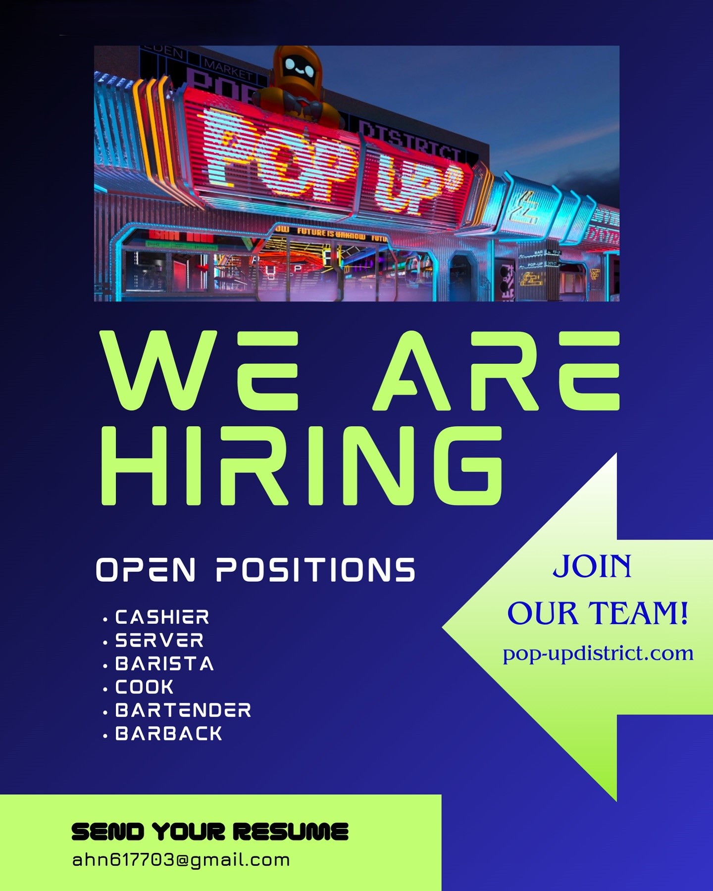

Việc làm phổ biến cho người Việt tại Mỹ năm 2025 đang mở ra nhiều cơ hội hấp dẫn, đặc biệt trong các ngành nghề phù hợp với kỹ năng và thế mạnh của cộng đồng. Dưới đây là tổng quan về những ngành nghề, địa điểm và cách tìm việc hiệu quả:
1. Ngành Y tế và Điều dưỡng: Nhu cầu nhân lực cao do dân số già hóa. Mức lương trung bình từ $70,000 – $200,000/năm tùy vị trí.
2. Ngành Nhà hàng – Khách sạn và Ẩm thực: Phục hồi mạnh sau đại dịch, không yêu cầu bằng cấp cao. Thu nhập từ $30,000 – $60,000/năm cộng thêm tiền tip.
3. Ngành Dịch vụ Làm đẹp (Nail, Phun xăm, Nối mi): Phổ biến trong cộng đồng người Việt, dễ học và dễ làm. Thu nhập ổn định từ $30,000 – $50,000/năm.
4. Ngành Kỹ thuật và Xây dựng: Nhu cầu cao trong phát triển hạ tầng. Mức lương trung bình từ $80,000 – $130,000/năm.
5. Ngành Logistics và Vận tải: Nhiều công việc ổn định, không yêu cầu bằng đại học. Thu nhập từ $40,000 – $60,000/năm.
1. Texas: Nền kinh tế đa dạng, chi phí sinh hoạt hợp lý, không có thuế thu nhập tiểu bang. Cộng đồng người Việt lớn mạnh với khoảng 272,000 người .
2. California: Trung tâm công nghệ và sáng tạo, cộng đồng người Việt đông đảo.
3. Washington: Phát triển mạnh trong lĩnh vực công nghệ và hàng không.
4. Massachusetts: Nổi tiếng về giáo dục và y tế, chất lượng sống cao.
5. Florida: Khí hậu ấm áp, ngành du lịch và dịch vụ phát triển mạnh.
Tại Virginia, đặc biệt là ở Fairfax và Falls Church, cộng đồng người Việt đóng vai trò quan trọng trong nhiều lĩnh vực nghề nghiệp, phản ánh sự đa dạng và hội nhập sâu rộng vào đời sống kinh tế và xã hội của khu vực.
Dưới đây là những ngành nghề phổ biến Tại Virginia, đặc biệt là ở Fairfax và Falls Church.
Nhiều người Việt tại Fairfax và Falls Church làm việc trong lĩnh vực y tế, bao gồm: Điều phối viên chăm sóc sức khỏe (Care Coordinator): NOVA Home Health Care tại Fairfax tuyển dụng điều phối viên song ngữ Anh–Việt để hỗ trợ bệnh nhân trong cộng đồng. 👉 Tìm hiểu thêm →
Chăm sóc tại nhà (Caregiver): Always Family HomeCare tại Falls Church tuyển dụng nhân viên chăm sóc người cao tuổi, yêu cầu khả năng giao tiếp bằng tiếng Việt để phục vụ khách hàng gốc Việt. 👉 Tìm hiểu thêm →
Phiên dịch viên tự do (Freelance Interpreter). Liberty Language Services tại Fairfax cung cấp cơ hội làm việc linh hoạt cho phiên dịch viên tiếng Việt, đặc biệt trong lĩnh vực y tế.
👉 Tìm hiểu thêm →
Giáo viên tiếng Việt. Trường công lập Fairfax County tuyển dụng giáo viên tiếng Việt cho các chương trình ngôn ngữ bậc trung học, phản ánh nhu cầu duy trì và phát triển ngôn ngữ trong cộng đồng.
👉 Tìm hiểu thêm →
Eden Center tại Falls Church Virginia đang tuyển dụng nhân viên 👉 Tìm hiểu thêm →

1. kết nối nhanh chóng với người Việt , tìm kiếm cơ hội việc làm qua trang web: Nguoi Viet ; và trang web: Rao Vặt .
2. Tại Hoa Kỳ, hệ thống American Job Centers (AJCs) do Bộ Lao động Hoa Kỳ quản lý, cung cấp các dịch vụ miễn phí như: Tư vấn nghề nghiệp và hỗ trợ viết sơ yếu lý lịch. Đào tạo kỹ năng và chương trình học nghề. Truy cập máy tính và internet để tìm kiếm việc làm. Hỗ trợ nộp đơn xin trợ cấp thất nghiệp. Hội thảo và sự kiện tuyển dụng
3.Tìm kiếm cơ hội việc làm qua trang web Boat People SOS, Inc. (BPSOS) là tổ chức phi lợi nhuận chuyên hỗ trợ người Việt tại Hoa Kỳ. Tại Virginia, nằm ở Falls Church (6606 Leesburg Pike, Suite 100 Falls Church, VA 22041).
BPSOS cung cấp:
Thực hiện theo các bước sau để tìm và ứng tuyển vào các vị trí trong chính phủ liên bang Hoa Kỳ:
🧭 Bước 1: Tạo hồ sơ trên USAJOBS
• Truy cập USAJOBS.gov, trang web tuyển dụng chính thức của chính phủ liên bang Hoa Kỳ.
• Tạo tài khoản: Đăng ký và hoàn thiện hồ sơ cá nhân.
• Tải lên sơ yếu lý lịch (résumé): Bạn có thể sử dụng công cụ tạo résumé trực tuyến của USAJOBS để đảm bảo đáp ứng các yêu cầu cụ thể của liên bang.
• Tải lên các tài liệu cần thiết: Chẳng hạn như bảng điểm, thư giới thiệu, giấy chứng nhận ưu tiên cho cựu chiến binh (nếu có).
🔍 Bước 2: Tìm kiếm công việc phù hợp
• Sử dụng bộ lọc tìm kiếm: Lọc theo vị trí địa lý, mức lương, cơ quan tuyển dụng, hoặc loại công việc.
📌 Lưu ý quan trọng: Trong hệ thống tuyển dụng liên bang của Hoa Kỳ, “Merit Promotion” and “All U.S. Citizens” là hai loại thông báo tuyển dụng khác nhau. Ví dụ trên USAJOBS bạn có thể thấy một công việc liên bang được liệt kê hai lần. "This job is open to Federal Employees – Competitive service” or “Merit Promotion”.
"This job is open to “All U.S. Citizens” là loại thông báo tuyển tất cả công dân Hoa Kỳ bất kể có làm việc cho liên bang trước đó hay không.
📄 Bước 3: Chuẩn bị hồ sơ ứng tuyển
Đọc kỹ thông báo tuyển dụng: Đảm bảo bạn đáp ứng đầy đủ các yêu cầu và tiêu chí. Chuẩn bị résumé theo định dạng liên bang: Résumé liên bang thường chi tiết hơn, bao gồm thông tin về công việc trước đây, giờ làm việc, mức lương, và thông tin liên hệ của người giám sát.
📤 Bước 4: Nộp hồ sơ
Nhấn "Apply" trên USAJOBS: Hệ thống sẽ hướng dẫn bạn qua quy trình nộp hồ sơ, bao gồm đính kèm résumé và các tài liệu cần thiết. Hoàn thành các bước bổ sung: Một số cơ quan có thể yêu cầu bạn hoàn thành bảng câu hỏi hoặc nộp thêm tài liệu. Biết thêm chi tiết Quy trình nộp đơn hoạt động như thế nào?
Viết thư xin việc (cover letter): Nếu được yêu cầu, hãy viết thư xin việc nêu rõ lý do bạn phù hợp với vị trí.
⏳ Bước 5: Theo dõi và chờ phản hồi
Theo dõi trạng thái hồ sơ: Đăng nhập vào tài khoản USAJOBS để xem trạng thái ứng tuyển.
Chờ phản hồi từ cơ quan tuyển dụng: Quá trình xem xét hồ sơ có thể mất vài tuần đến vài tháng.
Phỏng vấn: Nếu được chọn, bạn sẽ được mời tham gia phỏng vấn, có thể qua điện thoại, chat team hoặc trực tiếp. 👉 Biết thêm chi tiết →
💡 Notes: Tham khảo trang web này để biết thêm thông tin và hướng dẫn chi tiết nộp đơn vào các chương trình thực tập và công việc toàn thời gian. Go-Government
📌Lưu ý quan trọng Chuẩn bị kỹ lưỡng: Hồ sơ ứng tuyển vào chính phủ liên bang yêu cầu chi tiết và tuân thủ nghiêm ngặt các hướng dẫn.
Kiên nhẫn: Quá trình tuyển dụng có thể kéo dài, do đó hãy kiên nhẫn và theo dõi thường xuyên.